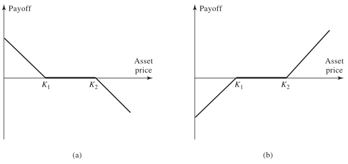

10 Options on Indices, Currencies, and Futures
- HULL, John. Options, futures, and other derivatives. Ninth edition. Harlow: Pearson, 2018. ISBN 978-1-292-21289-0.
- Chapter 17 - Options on Stock Indices and Currencies
- Chapter 18 - Futures Options and Black’s Model
- PIRIE, Wendy L. Derivatives. Hoboken: Wiley, 2017. CFA institute investment series. ISBN 978-1-119-38181-5.
- Chapter 4 - Valuation of Contingent Claims
Learning Outcomes:
- Understand how index options are used for hedging and portfolio protection, and their advantages over stock-based strategies.
- Apply the Black-Scholes model to value index options.
- Use currency options to hedge FX risk, and value them using spot and forward prices.
- Evaluate European futures options using Black’s model, and differentiate options on futures from those on physical assets.
10.1 Options on Stock Indices
Index options allow investors to speculate on or hedge against movements in a broad market index, without trading individual stocks. Major U.S. index options include:
S&P 100 Index (OEX and XEO): OEX options are American-style; XEO options are European-style. Both provide exposure to the top 100 S&P stocks.
S&P 500 Index (SPX): European-style options tracking 500 large-cap U.S. stocks. Widely used by institutional investors for hedging and tactical positioning.
Dow Jones Index (DJX): Priced at 1/100th of the Dow Jones Industrial Average, offering a low-cost hedge or exposure to 30 major U.S. stocks.
Nasdaq 100 Index (NDX): European-style options on the 100 largest non-financial Nasdaq stocks, heavily weighted toward technology.
ll are exchange-traded, settled in cash, and each contract represents 100 times the index level, avoiding physical delivery.
Using Index Options for Portfolio Insurance
Portfolio insurance uses index put options to protect against market declines.
Notation:
- \(S_0\): current index level
- \(K\): strike price
- \(\beta\): portfolio beta relative to the index
Strategy:
- For \(\beta = 1.0\), buy one put per \(\$100 \times S_0\) of portfolio value.
- For \(\beta \ne 1.0\), buy \(\beta\) puts per \(\$100 \times S_0\).
- Choose \(K\) based on desired insurance threshold.
Portfolio:
- Value = $500,000
- \(\beta\) = 1.0
- Index = 1,000
- Target insured value = $450,000
Implementation:
- Required: \(500{,}000 / (100 \times 1{,}000) = 5\) put options
- Strike price: \(K = 900\) (10% below current level)
If index falls to 880:
- Portfolio drops to approx. $440,000
- Option payoff:
\[\text{Payoff} = 5 \times (900 - 880) \times 100 = \$10{,}000\]
- Net portfolio value: $440,000 + $10,000 = $450,000
Portfolio:
- Value = $500,000
- \(\beta\) = 2.0
- Index = 1,000
- Target insured value = $450,000
- Risk-free rate = 12% p.a., dividend yield = 4%
Contracts Required:
\[\frac{500{,}000}{100 \times 1{,}000} \times 2 = 10\] put options
Determining Strike Price via CAPM
Index rises to 1,040 in 3 months: 4% return
Total return: 5% (4% price + 1% dividends)
Excess return: \(5\% - 3\% = 2\%\) (quarterly risk-free rate)
Portfolio excess return: \(2\% \times 2 = 4\%\)
Net return: \(4\% + 3\% - 1\% = 6\%\)
Projected portfolio value:
\[500{,}000 \times 1.06 = 530{,}000\]Result: Similar calculations can be carried out for other values of the index at the end of the three months. Appropriate strike price for the 10 put option contracts that are purchased is 960 (or 955 when we include dividends).
| Index in 3 Months | Portfolio Value in 3 Months ($) |
|---|---|
| 1,080 | 570,000 |
| 1,040 | 530,000 |
| 1,000 | 490,000 |
| 960 | 450,000 |
| 920 | 410,000 |
| 880 | 370,000 |
10.2 Valuation of Stock Index Options
Valuing European index options relies on understanding asset price dynamics. The probability distribution of the index price is the same in two cases:
- When the index starts at \(S_0\) and pays a continuous dividend yield \(q\).
- When the index starts at \(S_0 e^{-qT}\) with no dividends.
This equivalence allows us to adjust the starting price to \(S_0 e^{-qT}\) and apply the standard no-dividend valuation framework, simplifying the analysis.
Lower Bounds and Put-Call Parity
The intrinsic value sets a lower bound on option prices, preventing arbitrage.
Call Lower Bound: \[c \geq \max(S_0 e^{-qT} - K e^{-rT}, 0)\]
Put Lower Bound: \[p \geq \max(K e^{-rT} - S_0 e^{-qT}, 0)\]
Put-Call Parity: \[c + K e^{-rT} = p + S_0 e^{-qT}\]
This relationship links European calls and puts with the same \(K\) and \(T\).
Black-Scholes with Dividend Yield
The Black-Scholes model is extended to incorporate continuous dividend yields \(q\):
- Call: \[c = S_0 e^{-qT} N(d_1) - K e^{-rT} N(d_2)\]
- Put: \[p = K e^{-rT} N(-d_2) - S_0 e^{-qT} N(-d_1)\]
Where: \[d_1 = \frac{\ln(S_0 / K) + (r - q + \frac{1}{2} \sigma^2)T}{\sigma \sqrt{T}}, \quad d_2 = d_1 - \sigma \sqrt{T}\]
Valuation Using Forward Prices
European options can also be valued using the forward price \(F_0 = S_0 e^{(r - q)T}\):
- Call: \[c = e^{-rT}[F_0 N(d_1) - K N(d_2)]\]
- Put: \[p = e^{-rT}[K N(-d_2) - F_0 N(-d_1)]\]
Where: \[d_1 = \frac{\ln(F_0 / K) + \frac{1}{2} \sigma^2 T}{\sigma \sqrt{T}}, \quad d_2 = d_1 - \sigma \sqrt{T}\]
This method is especially effective for dividend-paying assets, using forward or futures prices directly.
Implied Forward Prices and Dividend Yields
Option prices can be used to infer forward prices and dividend yields:
Implied Forward Price: \[F_0 = K + (c - p) e^{rT}\]
Implied Dividend Yield: \[q = -\frac{1}{T} \ln \left( \frac{c - p + K e^{-rT}}{S_0} \right)\]
These estimates help uncover market expectations and are key inputs in OTC markets and early exercise decisions for American options.
10.3 Currency Options
Currency options hedge against foreign exchange risk and are widely used by firms with international operations. They are traded both on exchanges (e.g., NASDAQ OMX) and over the counter (OTC), playing a key role in financial risk management.
Currencies behave like dividend-paying assets, with the foreign interest rate \(r_f\) acting as the yield. This allows the use of stock option pricing models, treating \(r_f\) analogously to a dividend yield.
Range Forward Contracts
Range forwards are tailored contracts that limit currency exposure within a specified band:
- To hedge currency payments, sell a put at \(K_1\) and buy a call at \(K_2\) (\(K_2 > K_1\)).
- To hedge currency receipts, buy a put at \(K_1\) and sell a call at \(K_2\).
- The premium received typically offsets the premium paid, keeping net cost low.

These contracts provide partial protection while allowing limited participation in favorable exchange rate movements.
Black-Scholes for Currency Options
Adapting Black-Scholes to currency options yields:
- Call: \[c = S_0 e^{-r_f T} N(d_1) - K e^{-rT} N(d_2)\]
- Put: \[p = K e^{-rT} N(-d_2) - S_0 e^{-r_f T} N(-d_1)\]
Where: \[d_1 = \frac{\ln(S_0 / K) + (r - r_f + \frac{1}{2} \sigma^2)T}{\sigma \sqrt{T}}, \quad d_2 = d_1 - \sigma \sqrt{T}\]
Valuation Using Forward Prices
Alternatively, use the forward exchange rate \(F_0 = S_0 e^{(r - r_f)T}\):
- Call: \[c = e^{-rT}[F_0 N(d_1) - K N(d_2)]\]
- Put: \[p = e^{-rT}[K N(-d_2) - F_0 N(-d_1)]\]
Where: \[d_1 = \frac{\ln(F_0 / K) + \frac{1}{2} \sigma^2 T}{\sigma \sqrt{T}}, \quad d_2 = d_1 - \sigma \sqrt{T}\]
This forward-based approach simplifies valuation by embedding interest rate differentials directly into the pricing.
10.4 Options on Futures and Black’s Model
Futures options grant the right, but not the obligation, to enter into a futures contract at a set price before expiration. These are usually American-style and expire shortly before or on the first delivery date of the underlying futures contract.
Mechanics of Futures Options
Call Options
Exercising a call on futures gives the holder a long futures position and a cash payout equal to the difference between the most recent settlement price and the strike price.
- Strike = 320¢/lb, futures price = 331¢, latest settlement = 330¢
- Each contract = 25,000 lbs
- Cash payout: \(25{,}000 \times (330 - 320)\text{¢} = \$2{,}500\)
- Close futures position for: \(25{,}000 \times (331 - 330)\text{¢} = \$250\)
- Total payoff: $2,750
Put Options
Exercising a put gives a short futures position and a cash payout based on the strike minus the settlement price.
- Strike = 600¢/bushel, futures = 580¢, settlement = 579¢
- Each contract = 5,000 bushels
- Cash payout: \(5{,}000 \times (600 - 579)\text{¢} = \$1{,}050\)
- Close short for: \(5{,}000 \times (579 - 580)\text{¢} = -\$50\)
- Total payoff: $1,000
Futures Option Payoffs (Immediate Closeout)
The payoff for futures options, if the position in the futures contract is closed out immediately after exercising the option, is straightforward:
- Call: \[\text{Payoff} = F - K\]
- Put: \[\text{Payoff} = K - F\]
Where \(F\) is the futures price at exercise, and \(K\) is the strike.
Why Use Futures Options?
Spot Option Equivalence:
When expiration coincides, European futures and spot options have the same value.Greater Liquidity:
Futures markets are often more liquid than spot markets, improving execution quality.No Physical Delivery:
Exercise results in a futures position, not physical delivery—useful for commodities.Integrated Markets:
Futures options and futures trade on the same exchange, simplifying trading.Lower Costs:
Centralized trading and standardized contracts often reduce transaction costs.
Put-Call Parity and Lower Bounds for European Futures Options
Put-Call Parity
Consider two portfolios:
- A European call plus cash: \(c + K e^{-rT}\)
- A European put plus a long futures position and cash: \(p + F_0 e^{-rT}\)
To prevent arbitrage, both must have equal value at maturity:
\[c + K e^{-rT} = p + F_0 e^{-rT}\]
This parity links European futures calls and puts with the same strike \(K\) and maturity \(T\).
Lower Bounds
Minimum prices to prevent arbitrage:
- Call: \[c \geq (F_0 - K)e^{-rT}\]
- Put: \[p \geq (K - F_0)e^{-rT}\]
Black’s Model for Futures Options
Futures require no initial investment, so their expected return under the risk-neutral measure is zero. This makes them analogous to stocks paying a dividend yield \(q = r\), simplifying valuation.
Black (1976) adapted the Black-Scholes model for European options on futures:
- Call: \[c = e^{-rT}[F_0 N(d_1) - K N(d_2)]\]
- Put: \[p = e^{-rT}[K N(-d_2) - F_0 N(-d_1)]\]
Where: \[d_1 = \frac{\ln(F_0 / K) + \frac{1}{2} \sigma^2 T}{\sigma \sqrt{T}}, \quad d_2 = d_1 - \sigma \sqrt{T}\]
Futures vs. Spot Option Valuation
Contango (\(F_0 > S_0\)):
American calls on futures > spot calls; American puts on futures < spot puts.Backwardation (\(F_0 < S_0\)):
American calls on futures < spot calls; American puts on futures > spot puts.
10.5 Practice Questions and Problems
Index Options
- A stock index is currently 300, the dividend yield on the index is 3% per annum, and the risk-free interest rate is 8% per annum. What is a lower bound for the price of a six- month European call option on the index when the strike price is 290?
Lower bound = 16.90
- Consider a stock index currently standing at 250. The dividend yield on the index is 4% per annum, and the risk-free rate is 6% per annum. A three-month European call option on the index with a strike price of 245 is currently worth $10. What is the value of a three-month put option on the index with a strike price of 245?
Put option value = 3.84
- Calculate the value of a three-month at-the-money European call option on a stock index when the index is at 250, the risk-free interest rate is 10% per annum, the volatility of the index is 18% per annum, and the dividend yield on the index is 3% per annum.
Call option value = 11.15
- An index currently stands at 696 and has a volatility of 30% per annum. The risk-free rate of interest is 7% per annum and the index provides a dividend yield of 4% per annum. Calculate the value of a three-month European put with an exercise price of 700.
Put option value = 40.6
Currency Options
- A foreign currency is currently worth $1.50. The domestic and foreign risk-free interest rates are 5% and 9%, respectively. Calculate a lower bound for the value of a six-month call option on the currency with a strike price of $1.40 if it is (a) European and (b) American.
Lower bound European = 0.069 Lower bound American = 0.10
- Calculate the value of an eight-month European put option on a currency with a strike price of 0.50. The current exchange rate is 0.52, the volatility of the exchange rate is 12%, the domestic risk-free interest rate is 4% per annum, and the foreign risk-free interest rate is 8% per annum.
Put option value = 0.0162
- A currency is currently worth $0.80 and has a volatility of 12%. The domestic and foreign risk-free interest rates are 6% and 8%, respectively. Use a two-step binomial tree to value (a) a European four-month call option with a strike price of 0.79 and (b) an American four-month call option with the same strike price.
- European Option Value: $0.0235
- American Option Value: $0.0250
Futures Options
- Consider a two-month futures call option with a strike price of 40 when the risk-free interest rate is 10% per annum. The current futures price is 47. What is a lower bound for the value of the futures option if it is (a) European and (b) American?
Lower bound European = 6.88 Lower bound American = 7
- Consider a four-month futures put option with a strike price of 50 when the risk-free interest rate is 10% per annum. The current futures price is 47. What is a lower bound for the value of the futures option if it is (a) European and (b) American?
Lower bound European = 2.90 Lower bound American = 3
- Calculate the value of a five-month European futures put option when the futures price is $19, the strike price is $20, the risk-free interest rate is 12% per annum, and the volatility of the futures price is 20% per annum.
Put option value = 1.50
- A futures price is currently 25, its volatility is 30% per annum, and the risk-free interest rate is 10% per annum. What is the value of a nine-month European call on the futures with a strike price of 26?
Call option value = 2.01
- A futures price is currently 60 and its volatility is 30%. The risk-free interest rate is 8% per annum. Use a two-step binomial tree to calculate the value of a six-month European call option on the futures with a strike price of 60. If the call were American, would it ever be worth exercising it early?
- European Option Value: \(4.3155\)
- American Option Value: \(4.4026\)
- Suppose that a one-year futures price is currently 35. A one-year European call option and a one-year European put option on the futures with a strike price of 34 are both priced at 2 in the market. The risk-free interest rate is 10% per annum. Identify an arbitrage opportunity.
Arbitrage profit = $1
Strategic Considerations
Would you expect the volatility of a stock index to be greater or less than the volatility of a typical stock? Explain your answer.
Does the cost of portfolio insurance increase or decrease as the beta of a portfolio increases? Explain your answer.
Explain how corporations can use range forward contracts to hedge their foreign exchange risk when they are due to receive a certain amount of a foreign currency in the future.
An index currently stands at 1,500. Six-month European call and put options with a strike price of 1,400 and time to maturity of six months have market prices of 154.00 and 34.25, respectively. The risk-free rate is 5%. What is the implied dividend yield?
Implied dividend yield = 1.99%
- Consider an American futures call option where the futures contract and the option contract expire at the same time. Under what circumstances is the futures option worth more than the corresponding American option on the underlying asset?